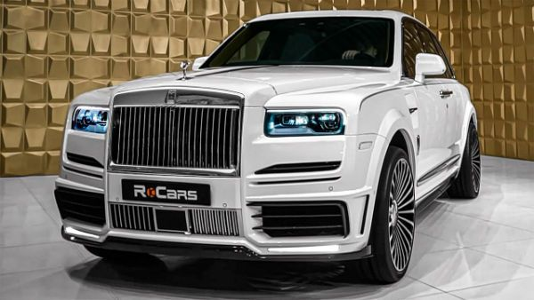
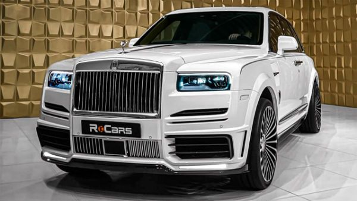

Rolls Royce Cullinan
price R10 million
| Engine Name | twin-turbo V12 |
| Horsepower | 563 hp |
| Transmission Type | 8-speed automatic |
| Class | Luxury |
The Cullinan is an all-terrain high-bodied automobile, according to Rolls-Royce, that for the first time brings the concept of realistic, luxury off-road travel to life.
it's the most practical product in Rolls-portfolio. Royce's It's large and tall, with a length of over 19 feet
It's also called after the world's largest diamond, which is now housed in the Crown Jewels of the United Kingdom.
UNMISTAKABLY ROLLS‑ROYCE ... Iconic motifs speak to a heritage of excellence, enhancing Cullinan's formidable presence with pinnacle luxury.
 
